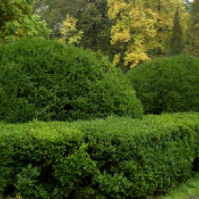

<div class="details_wrapper">
    <div class="container">
        <div class="details_header">
            <div class="back_btn" (click)="back()">&lt; Назад</div>
            <div class="details_title">Деталі завдання</div>
        </div>
        <div class="details_body">
            <div class="details_subheader">
                <div class="details_subheader-title">Діагностика та лікування троянд</div>
                <div class="details_status">Активно</div>
            </div>

            <div class="type-of-work_list" >
                <div class="type-of-work">Догляд за газоном</div>
                <div class="type-of-work">Догляд за рослинами</div>
                <div class="type-of-work">Діагностика хвороб</div>
                <div class="type-of-work">Лікування хвороб</div>
                <div class="type-of-work">Догляд за газоном</div>
            </div>

            <div class="profile_location">
                
                <span>Київ, Обухів, Вишгород, Житомир</span>
            </div>

            <div class="order_price">
                 
                <span>450</span>
            </div>

            <div class="details_descr">
                У мене вдома росте вражаюча колекція троянд, яка вже багато років прикрашає мій сад своєю красою. Але, на жаль, останнім часом мої троянди зустріли серйозну загрозу. Їхнє листя почало засихати, покриваючись чорними плямами, а квітки втратили свою барвистість і форму.
                Моя основна турбота полягає в тому, щоб встановити точну причину цих проблем та прийняти негайні заходи. Ось, що ви можете помітити:
                Чорні плями на листках: Ця хвороба розповсюджується і знищує листя. Найважливіше - зупинити її розповсюдження.
                Висихання квітів: Квітки втрачають вигляд, і їхні пелюстки стають гіркими.
                Зміни у здоров'ї коренів: Якщо корені потребують уваги, будь ласка, проінформуйте мене.
                Я шукаю професіонала, який розуміє троянди та їхні проблеми, та має навички у лікуванні рослин. Моя мета - врятувати цю прекрасну колекцію. Я вдячна за вашу допомогу та готова обговорити винагороду.
            </div>
            <div class="details_photo-title">Фото</div>
            <div class="details-photo_wrapper">
                
                
                
                
                
            </div>

            <div class="details_published">Опубліковано 28.08.2023</div>
            <div class="details_author">Автор: 
                <span (click)="viewAuthor()">iryna_shevchenko</span>
            </div>
        </div>
    </div>
</div>
